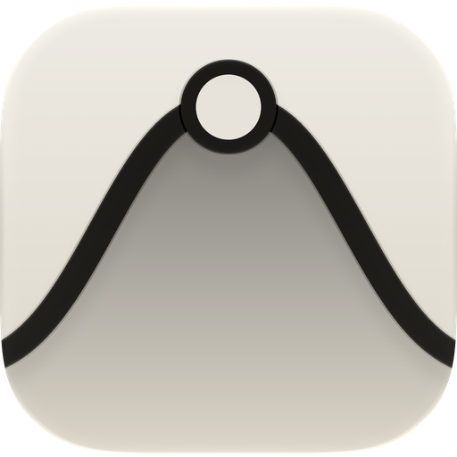
Guide
Every gesture in yawp, with the screen it belongs to. The same lines are in the app under ⋮ → hints.
Each voice is a loop with a line under it. You draw on the line, and the height of what you draw decides how many steps play and how hard. Loops of different lengths slip against each other, so the pattern keeps changing while you play.
使い方
yawp の操作を、その画面と一緒にまとめました。同じ内容は、アプリの ⋮ → hints でも読めます。
楽器はそれぞれ一本のループで、下に線が引かれています。線の上に指で描くと、描いた高さに応じて、鳴るステップの数と強さが決まります。長さの違うループは少しずつずれていくので、演奏している間もパターンが変わり続けます。
- 01Draw a loopループを描く
- 02Play: the deck演奏する：下のバー
- 03Move around the sheetシートを移動する
- 04Key and scaleキーとスケール
- 05The mixer and the padsミキサーとパッド
- 06The song: arc and chords曲のカーブ：ARC と CHORDS
- 07A voice up close楽器を大きく開く
- 08NOTESNOTES
- 09SOUNDSOUND
- 10WAVEWAVE
- 11ENV and LFOENV と LFO
- 12The chop: your own samplerchop：自分の音のサンプラー
- 13MIDI lanes and Ableton LinkMIDI レーンと Ableton Link
- 14Keep, record, share保存・録音・書き出し
- 15The drawerメニュー（⋮）
- 16Scenesシーン
- →yawp in other apps (AUv3, outputs)ほかのアプリで使う（AUv3・出力の振り分け）
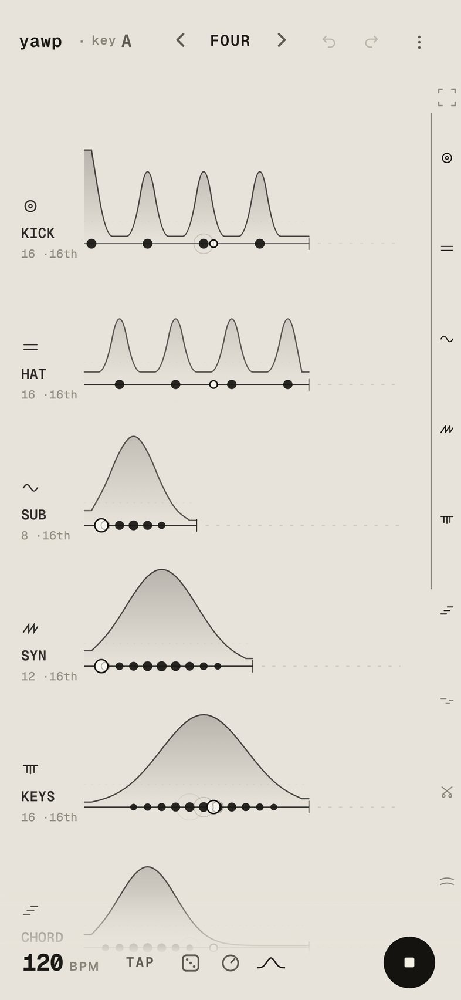
Draw a loop
- draw on a loopThe higher the hill, the more steps play and the harder they hit. Redraw it any time.
- tap a stepPin it, so it always plays. Tap again to silence it, and once more to hand it back to the hill.
- drag the end tickChanges the loop’s length. Loops of different lengths slip against each other.
- tap a nameMutes the voice. Hold the name for about half a second to solo it.
- the small printUnder each name, for example
16 ·16th. Tap it to choose where notes may land: every 16th, 8th or quarter.
On glitch, chop and arp the height also picks what plays: glitch’s four sounds, the chop’s slices, and how far the arp climbs.
ループを描く
- ループの上に描く丘が高いほど、鳴るステップが増えて、強く鳴ります。何度でも描き直せます。
- 音の点をタップタップするたびに「固定（必ず鳴る）」→「鳴らさない」→「丘に戻す」と切り替わります。
- 右端の縦線をドラッグループの長さが変わります。長さの違うループは、少しずつずれていきます。
- 名前をタップミュートします。名前を0.5秒ほど長押しするとソロになります。
- 名前の下の小さな文字たとえば
16 ·16th。タップすると、音を置ける間隔が 16分・8分・4分 と切り替わります。
glitch・chop・arp では、高さで鳴る音も変わります。glitch は4種類の音、chop はスライス、arp は上る段の数です。
Play: the deck
- 120 BPMDrag the number up or down to change the tempo. TAP sets it by tapping.
- the dieDeals a new piece on every throw. Your mutes stay as they are. Now and then it deals a break: funk under 110 BPM, broken beat up to 145, jungle above that.
- hold the dieThe super shuffle: a whole new song in one style — its tempo, key and scale, who plays, the sound each wears, every loop and the echo and room. ⋮ → shuffle chooses which of these a hold may change.
- ‹ FOUR ›At the top. The presets Four, Seven and Haze change the rhythms of the voices you have on the sheet.
- ●The large button at the right starts and stops the music.
演奏する：下のバー
- 120 BPM数字を上下にドラッグするとテンポが変わります。TAP は、タップした速さに合わせます。
- サイコロ振るたびに、新しい曲の展開を配ります。ミュートはそのままです。ときどきブレイクビーツを配ります（110 BPM 未満はファンク、145 まではブロークンビーツ、それより速いとジャングル）。
- サイコロを長押しスーパーシャッフル：一つのスタイルで、新しい曲をまるごと作ります。テンポ・キーとスケール・楽器・それぞれの音色・すべてのループ・エコーとルームが変わります。⋮ → shuffle で、長押しで変える部分を選べます。
- ‹ FOUR ›画面の上にあります。プリセットの Four・Seven・Haze で、今シートにいる楽器のリズムを入れ替えます。
- ●右の大きなボタンで、再生と停止を切り替えます。
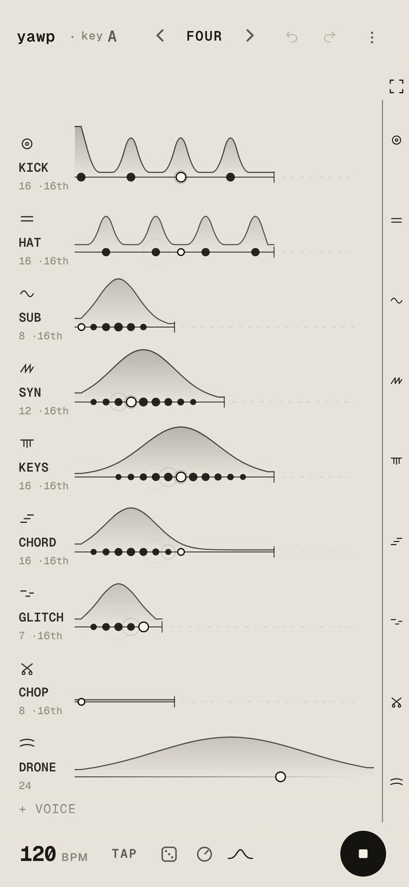
Move around the sheet
- the namesDrag the names on the left to scroll the rows.
- the right edgeEach voice’s icon. Touch one to bring that voice’s row up.
- the four cornersAt the top of the right edge. Folds every loop onto one screen, so you can see which voice plays where. Tap a loop to open the sheet onto it.
- + voiceUnder the last row. Calls another voice onto the sheet.
シートを移動する
- 名前左の名前をドラッグすると、列をスクロールできます。
- 右端のアイコン楽器ごとのアイコンです。触れると、その楽器の列へ移動します。
- 四隅のマーク右端のいちばん上にあります。全部のループを一画面に畳み、どの楽器がどこで鳴っているかを見渡せます。ループをタップすると、その楽器の位置で元に戻ります。
- + voiceいちばん下の列の下にあります。ほかの楽器をシートに呼びます。
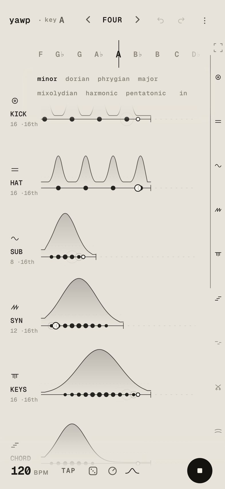
Key and scale
- key A by the titleOpens the tuner. Drag the tape sideways and the whole song moves to the new key.
- the words under itChoose the scale: minor, dorian, phrygian, major, mixolydian, harmonic, pentatonic, in.
キーとスケール
- タイトル横の key Aチューナーが開きます。テープを左右にドラッグすると、曲全体のキーが変わります。
- その下の言葉スケールを選びます。minor・dorian・phrygian・major・mixolydian・harmonic・pentatonic・in から選べます。
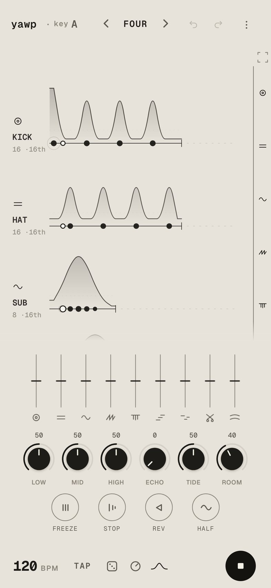
The mixer and the pads
- the knobThe glyph next to the die. Opens the mixer.
- fadersOne per voice. Tap the icon under a fader to mute, hold it to solo. A double tap brings a fader or a knob back to the middle.
- knobsLOW, MID and HIGH shape the whole song. ECHO and ROOM set how much echo and room you hear. TIDE lets each voice swell and fade slowly on its own.
- freeze · stop · rev · halfWork while you hold them. freeze repeats what it caught (slide your finger up for finer repeats), stop slows the tape to a halt, rev plays backwards, half drops an octave. Two can be held together.
- one voice onlyHold a voice’s fader or icon with one hand and press a pad with the other. The pad shows the voice’s name and plays on that voice alone.
The pads come with complete.
ミキサーとパッド
- ノブサイコロの隣のマークです。ミキサーが開きます。
- フェーダー楽器ごとの音量です。フェーダーの下のアイコンをタップするとミュート、長押しするとソロになります。フェーダーやつまみはダブルタップで真ん中に戻ります。
- つまみLOW・MID・HIGH は曲全体の音色です。ECHO と ROOM はエコーと残響の量です。TIDE を上げると、楽器ごとに音量がゆっくり満ち引きします。
- freeze · stop · rev · half押している間だけかかります。freeze は押した瞬間の音をくり返します（指を上にずらすと細かくなります）。stop はテープが止まるように減速し、rev は逆再生、half は1オクターブ下がります。2つ同時にかけられます。
- 1つの楽器だけに片方の手で楽器のフェーダーかアイコンを押さえたまま、もう片方の手でパッドを押します。パッドにその楽器の名前が出て、その楽器だけにかかります。
パッドは complete で使えます。
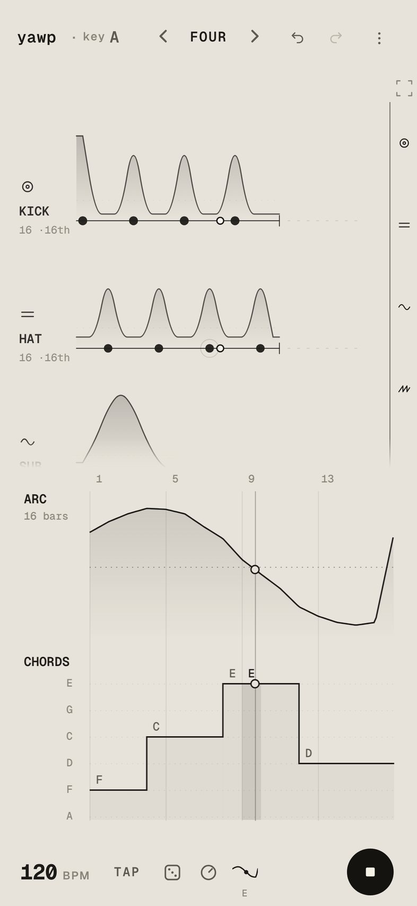
The song: arc and chords
- the hill right of the knobOpens the song’s curves, over 8, 16 or 32 bars (tap “16 bars” to change it).
- ARCDraw above the dotted middle and every hill grows. Draw below it and the loops thin out and darken. Use it to draw a build or a breakdown.
- CHORDSDraw steps, one chord per bar. Every voice with notes follows the chord.
The song’s curves come with complete.
曲のカーブ：ARC と CHORDS
- ノブの右の山のマーク曲のカーブが開きます。長さは 8・16・32 小節で、「16 bars」をタップすると切り替わります。
- ARC点線より上に描くと、すべての丘が大きくなります。下に描くと、ループが薄く、暗くなります。盛り上がりやブレイクを描けます。
- CHORDS小節ごとに階段を描いて、コードを選びます。音程のある楽器はすべてそのコードに合わせます。
曲のカーブは complete で使えます。
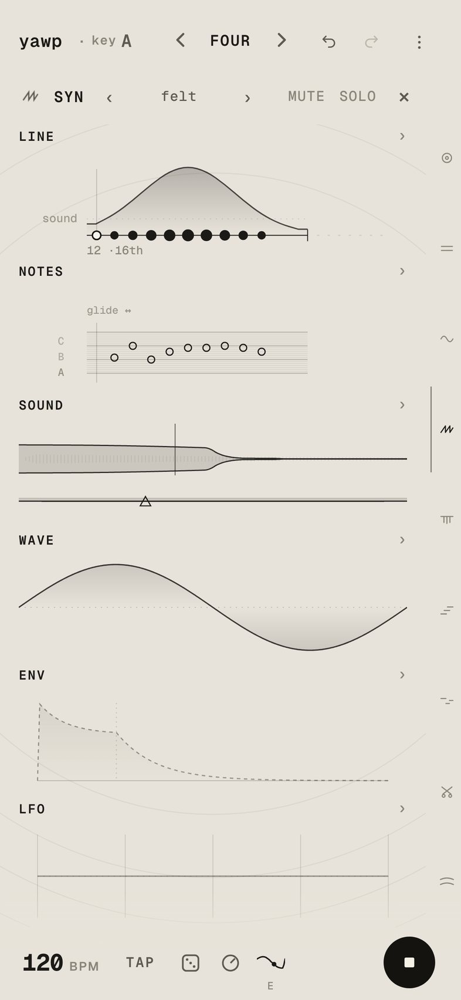
A voice up close
- tap a voice’s markThe small icon above its name. The voice opens, with its faces side by side: LINE, NOTES, SOUND, WAVE, ENV, LFO. Each shows a small picture of itself.
- tap a faceIt opens to the whole screen. The names along the bottom move to the other faces. The voice’s name at the top leads back.
- ‹ felt ›The voice’s presets. ‹ › steps through them. Tap the name to see all of them side by side, each with a picture of its sound.
+ keep this soundsaves your own. - the right edgeTouch another voice’s icon to open that voice instead.
楽器を大きく開く
- 楽器のマークをタップ名前の上の小さなアイコンです。楽器が大きく開き、LINE・NOTES・SOUND・WAVE・ENV・LFO の面が小さな絵で並びます。
- 面をタップその面が画面いっぱいに開きます。下の名前でほかの面へ移り、上の楽器名で戻ります。
- ‹ felt ›楽器のプリセットです。‹ › で切り替えます。名前をタップすると全部が並び、それぞれの音が小さな絵で見られます。
+ keep this soundで自分のプリセットとして保存します。 - 右端のアイコンほかの楽器のアイコンに触れると、その楽器に切り替わります。
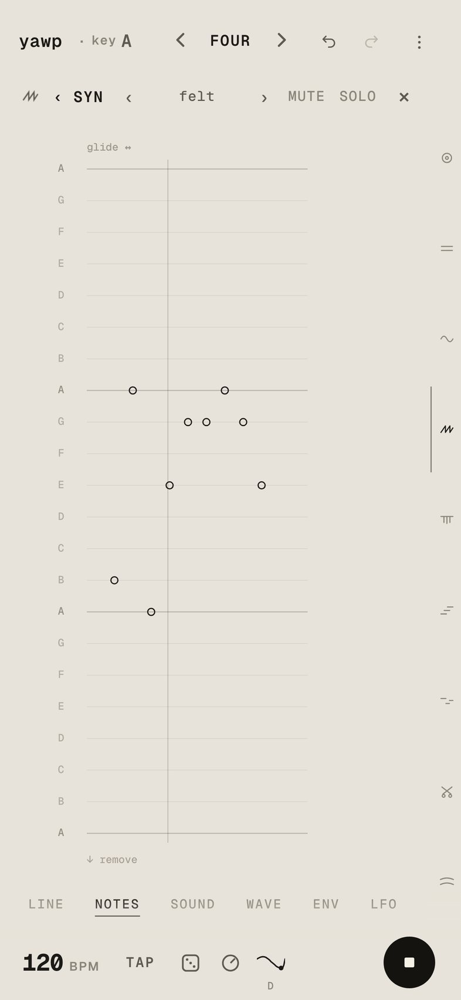
NOTES
- touch a columnEach line is a note of the scale. Touch or sweep a column and its step takes the nearest note. A double tap gives the step back its own note.
- glide ↔Drag it sideways and each note slides in from the one before.
- ↓ removePull a note down past the lowest line to take it out. A sweep along there takes out every note it crosses.
On LINE you can carry a dot along the loop, or under the line to take it out.
NOTES
- 列に触れる横線はスケールの音です。列に触れるか、なぞると、そのステップがいちばん近い音になります。ダブルタップで元の音に戻ります。
- glide ↔横にドラッグすると、前の音から滑り込むようになります。
- ↓ remove音をいちばん下の線より下まで引き下ろすと消えます。そこをなぞると、通った音がまとめて消えます。
LINE の面では、点をつかんで横に動かせます。線の下まで引き下ろして離すと消えます。
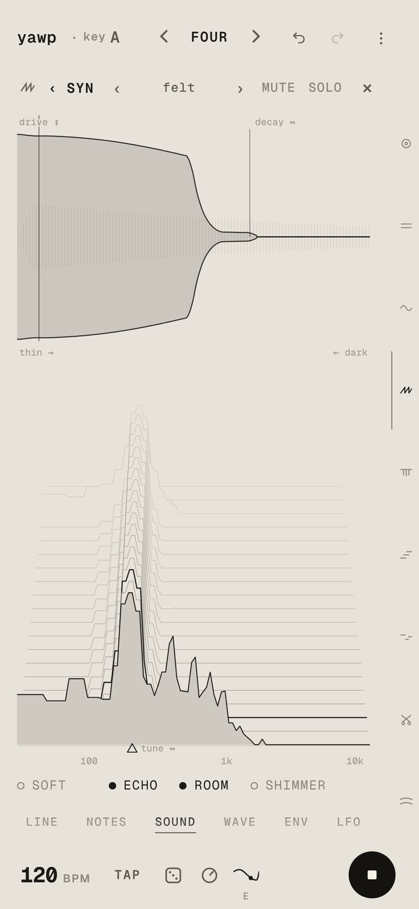
SOUND
One hit of the voice, drawn as its shape through time above its spectrum through time. You change the sound by moving the picture.
- pull the taildecay: how long it rings.
- press the body updrive: how hard it is pushed.
- slide the ▲tune.
- a curtain from either edgetone: from the right it gets darker, from the left thinner.
- lift or press the front lineEQ: raise or lower that part of the spectrum.
- soft · echo · room · shimmerAlong the bottom. Tap to switch. soft steps to open and bright on the synths; shimmer adds a bright room that climbs an octave each time round.
A double tap sends any of them back home.
SOUND
楽器を一回鳴らした音の形と、時間とともに変わるスペクトルを重ねて描いています。絵を動かすと、音が変わります。
- 尻尾を引くdecay：鳴っている長さ。
- 胴を押し上げるdrive：音の歪み。
- ▲ を滑らせるtune：音の高さ。
- 両端から幕を引くtone：右から引くと暗く、左から引くと細くなります。
- 手前の線を上下するEQ：スペクトルのその部分を持ち上げたり、下げたりします。
- soft · echo · room · shimmerいちばん下にあります。タップで切り替えます。シンセでは soft が open・bright と明るくなります。shimmer は、回るたびに1オクターブ上がる明るい残響を加えます。
どれもダブルタップで元に戻ります。
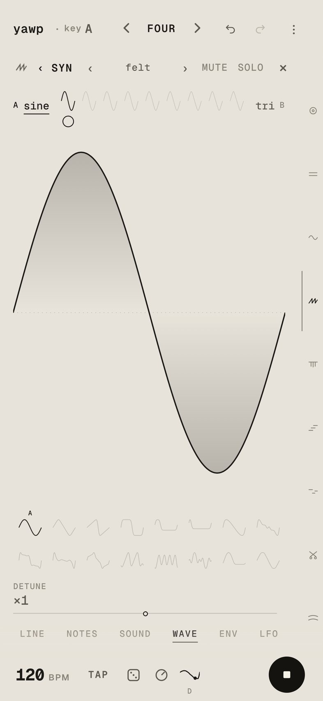
WAVE
- A · BTap A or B, then choose a shape from the shelf below.
- the bead between themMORPH: slide it to blend A into B.
- DETUNEHow far apart the voice’s pair of oscillators sits.
- draw on the cycleThe wave you draw becomes the chosen side, A or B. Both can be drawn, and MORPH blends one drawing into the other.
WAVE is on the synths: sub, syn, keys, organ, bell, chord, pad, smear, glint, arp and drone.
WAVE
- A · BA か B をタップしてから、下の棚から形を選びます。
- 間の玉MORPH：動かすと、A から B へ混ざっていきます。
- DETUNE2つの発振器の音程の開き具合です。
- 波形をなぞるなぞった形が、選んでいる側（A か B）の波形になります。A と B の両方に描けて、MORPH で描いた波形どうしを混ぜられます。
WAVE はシンセの楽器にあります（sub・syn・keys・organ・bell・chord・pad・smear・glint・arp・drone）。
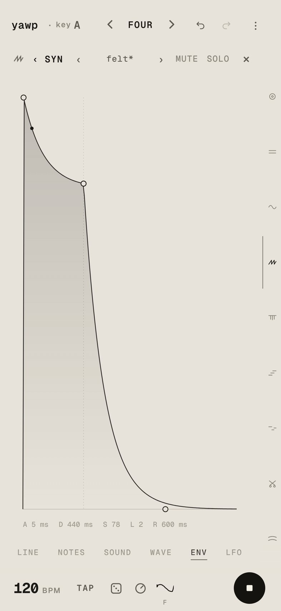
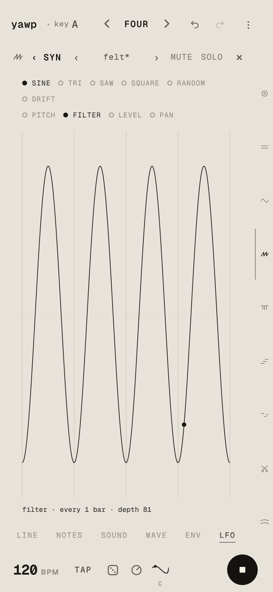
ENV and LFO
- ENVThe loudness of each note through time. Take hold of its corners: the peak (attack), the knee (decay; up or down for sustain), the gate (its length in steps) and the tail (release).
- LFOA slow movement on the song’s beat. Drag the wave sideways for its speed and up for how far it swings. Choose its shape, and what it moves: pitch, filter, level or pan.
A double tap lets either go. Until you touch them, the voice sounds as it is tuned.
ENV と LFO
- ENV1音ごとの音量の形です。角をつかんで動かします。頂点がアタック、膝がディケイ（上下でサステイン）、区切りが長さ（ステップ数）、尻尾がリリースです。
- LFO曲の拍に合わせた、ゆっくりした揺れです。波を横にドラッグすると速さ、上にドラッグすると揺れの深さが変わります。形と、何を揺らすか（音程・フィルター・音量・定位）を選びます。
どちらもダブルタップで解除できます。触れるまでは、楽器は元の設定で鳴ります。
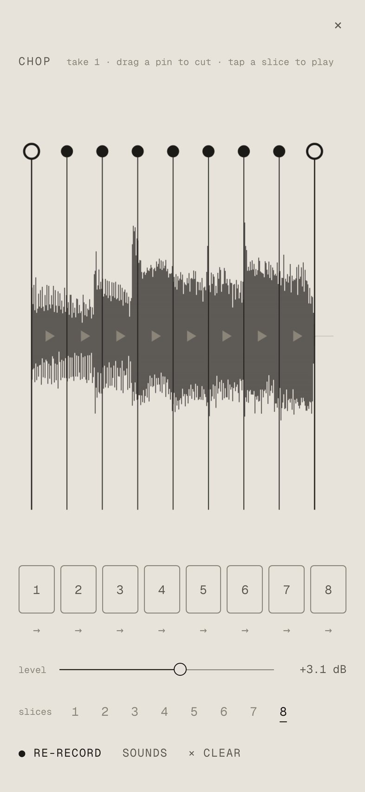
The chop: your own sampler
- tap a chop laneOpens the sampler. Press ● to start recording and press it again to stop, up to ten seconds. You can also choose one of your sounds, or a file.
- the cut linesThe take is cut into slices. Drag a line to move a cut. Tap a numbered pad to hear that slice.
- → under a padTurns that slice backwards.
- slices 1–8How many slices the take holds.
The height you draw on the chop lane picks which slice plays. There are three chop lanes; call the second and third from voices in the drawer.
chop：自分の音のサンプラー
- chop のレーンをタップサンプラーが開きます。● を押すと録音が始まり、もう一度押すと止まります（最大10秒）。保存した音やファイルを選ぶこともできます。
- 切れ目の線録った音はスライスに切り分けられます。線をドラッグすると切れ目が動きます。番号のパッドをタップすると、そのスライスを試聴できます。
- パッドの下の →そのスライスを逆再生にします。
- slices 1–8いくつに切り分けるかを選びます。
chop のレーンに描いた高さで、どのスライスが鳴るかが決まります。chop のレーンは3本あり、2本目と3本目はメニューの voices から呼べます。
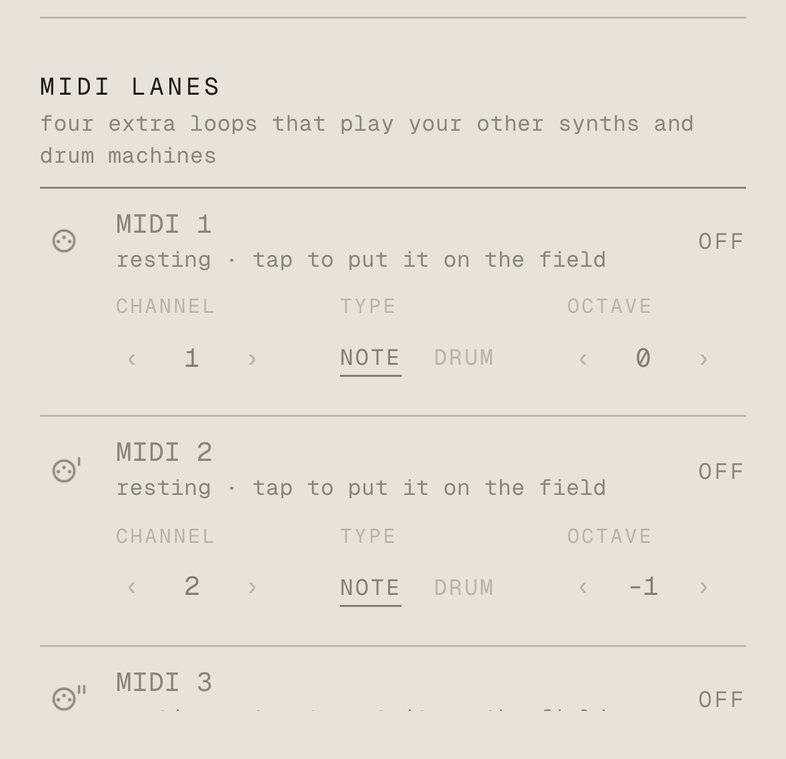
MIDI lanes and Ableton Link
- ⋮ → midiWhat yawp hears (keyboards, controllers, other apps) and where it sends MIDI. Each port switches on and off with a tap.
- MIDI lanesFour extra loops that play your other synths and drum machines. Set each one’s channel, NOTE or DRUM, and its octave or drum note. yawp’s own voices are not sent out.
- Ableton LinkAt the end of the same sheet. Plays in time with other apps and devices on the same Wi-Fi.
A MIDI controller can play yawp: its knobs turn the mixer’s knobs, its pads mute voices and open kept sets, and its keys set the key.
MIDI レーンと Ableton Link
- ⋮ → midiyawp が受ける MIDI（キーボード、コントローラー、ほかのアプリ）と、送る先を設定します。それぞれタップでオンとオフを切り替えます。
- MIDI レーン外部のシンセやドラムマシンを鳴らすための、4本のループです。チャンネル、NOTE か DRUM、オクターブかドラムの音番号を、それぞれ設定します。yawp の楽器の音は外に送りません。
- Ableton Link同じ画面のいちばん下にあります。同じ Wi-Fi にあるほかのアプリや機材と、テンポと小節を合わせて演奏できます。
MIDI コントローラーで yawp を演奏することもできます。つまみでミキサーのつまみ、パッドで楽器のミュートや保存したセット、鍵盤でキーを操作します。
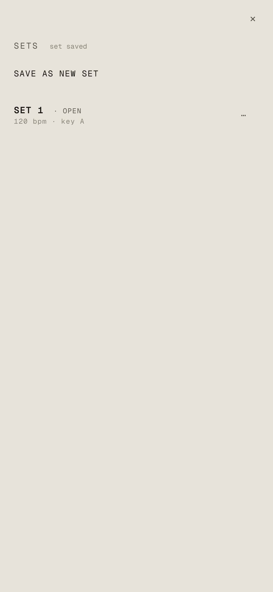
Keep, record, share
- ⋮ → sets
save as new setkeeps the whole song: the voices, every curve, the mix, the key and the tempo. Tap a set to open it.updatewrites your changes over the open set. - ⋯ on a setrename, share or delete. Share renders 32 bars as the stereo mix, a WAV for each voice, and one MIDI file, so they line up in a DAW. Choose any of the three.
- ⋮ → ● recRecords what you play, up to ten minutes. The take is kept under sets, where you can play or share it.
- ↶ ↷At the top right. Take back any change, or bring it back.
保存・録音・書き出し
- ⋮ → sets
save as new setで曲全体を保存します（楽器、すべてのカーブ、ミックス、キー、テンポ）。セットをタップすると開きます。updateで、開いているセットに変更を上書きします。 - セットの ⋯名前の変更、共有、削除ができます。共有では32小節を、ステレオのミックス、楽器ごとの WAV、MIDI ファイル1つに書き出します。DAW に並べると位置がそろいます。3つのうち必要なものを選べます。
- ⋮ → ● rec演奏を最大10分録音します。録った演奏は sets に残り、そこで再生や共有ができます。
- ↶ ↷右上にあります。どの操作も、元に戻したりやり直したりできます。
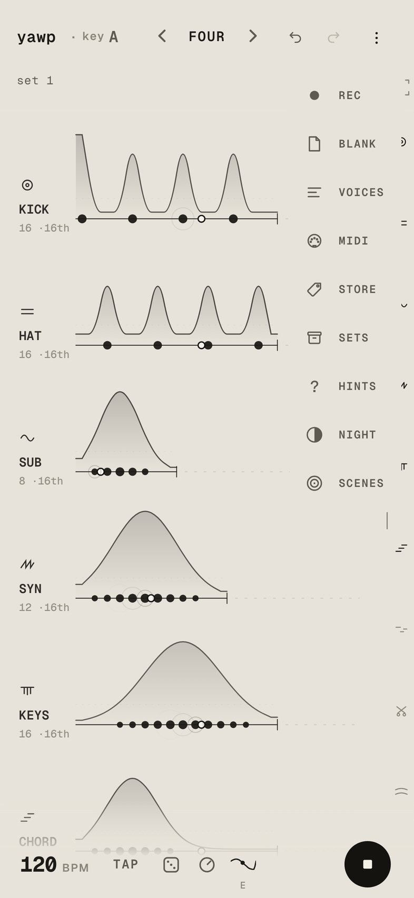
The drawer
- ● recRecord what you play.
- blankClears the sheet. A preset brings a band back.
- voicesEvery voice you own. Tap one to rest it or call it back.
- midiPorts, MIDI lanes and Ableton Link.
- shuffleWhat a hold on the die may change.
- storeThe packs and complete. Tap ▶ to hear a pack first.
- setsKept songs and takes.
- hintsEvery gesture on one sheet, and the tour.
- nightThe same sheet, inverted.
- scenesThe song as moving line art.
メニュー（⋮）
- ● rec演奏を録音します。
- blankシートを空にします。プリセットを選ぶと楽器が戻ります。
- voices持っているすべての楽器です。タップで休ませたり、呼び戻したりします。
- midiMIDI の入出力、MIDI レーン、Ableton Link です。
- shuffleサイコロの長押しで変える部分を選びます。
- storeパックと complete です。▶ で先に音を聴けます。
- sets保存した曲と、録音した演奏です。
- hintsすべての操作の一覧と、ツアーです。
- night同じシートを反転した、夜の表示です。
- scenes曲に合わせて動く線画です。
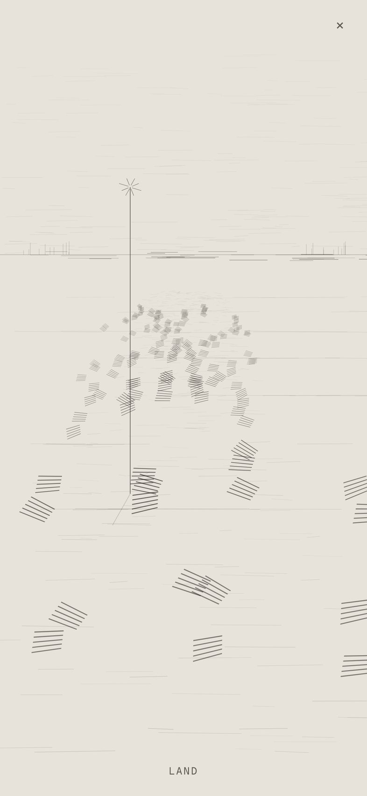
Scenes
Seven scenes of line art that move with the song: land, figure, mycelium, pond, cell, passage and room. Swipe sideways, or tap the scene’s name at the bottom, for the next one. Hold the name to choose from the list. The scenes are for watching; touching them changes nothing.
passage and room come with the windows pack.
シーン
曲に合わせて動く7つの線画です（land・figure・mycelium・pond・cell・passage・room）。左右にスワイプするか、下のシーン名をタップすると次のシーンへ移ります。名前を長押しすると一覧から選べます。シーンは眺めるためのもので、触れても変化しません。
passage と room は windows パックで使えます。